PAM1 RecycleView
Table of Contents
- 1. Tema
- 2. Objetivo
- 3. Duração
- 4. Diclaimer
- 5. Pré-Requisitos
- 6. Procedimento didatico
- 7. Exercicios e Atividades de Reflexão/Fixação
- 8. Avaliação
- 9. Referencias
1 Tema
RecycleView com List Adapter
2 Objetivo
Apresentar e Utilizar RecycleView
3 Duração
2Blocos
4 Diclaimer
Caro aluno, vc sabe que está sendo difícil atender todos vcs a contento
Além dessa dificuldade específica em sala de aula, ainda tem outra, a de que não consegui tempo de preparar um material também que mastigue o assunto e faça a digestão pra vc.
Então, sem ansiosidade, leia com calma todas as partes do documento. Qdo tiver dúvida, veja qual parte desse tutorial vc não entendeu, mas tem vezes que eu vou tirar dúvida e percebe que o aluno não leu o material.
Então vamos nos ajudar Leia com calma todas as partes
Outra coisa… Então vou sempre colocar o link pra vc das classes que vamos apresentar no tutorial. Mas lembre-se de fazer um favor pra vc mesmo, não copie e cole, digite normalmente as partes que vou dizer pra vc digitar.
Qdo vc for digitar o código, caso dê o primeiro erro pare tudo… Resolve o erro e depois continua Não digita a classe inteira cheia de erros de compilação..
Além disso, vou dizer neste material a ordem em que vc vai codificar as coisas.
5 Pré-Requisitos
É necessário que tenha feito a aula antes de como mudar o seu projeto pra usar jetpack, caso contrário, vc precisa usar o android studio 3.5 ou superior.
5.1 Conhecimentos Prévios
Utilizar o Android Studio O aluno tem que saber navegar nos arquivos do projeto Tem que saber criar activites Tem uma aula que explica a migração de blibliotecas do android, que é mais antiga, pela androidx. Se eu fosse resumir aquela aula pra vcs eu diria que seus arquivos build.gradle do projeto build.gradle do app gradle.properties do projeto
tem que estar iguais aos meus… build.gradle do projeto: https://github.com/wagnermarques/somewritings/blob/rascunho/android/projetos/PAM1RecycleView/build.gradle build.gradle do módulo app:https://github.com/wagnermarques/somewritings/blob/rascunho/android/projetos/PAM1RecycleView/app/build.gradle gradle.properties: https://github.com/wagnermarques/somewritings/blob/rascunho/android/projetos/PAM1RecycleView/gradle.properties
Sempre que der algum erro vc vem nesses arquivos e faz uma conferência. Isso é necessário porque se vc tiver usando o android studio 3.4 ele faz alterações automaticamente nesses arquivos que não vão funcionar. Então vc confere de novo e corrige de novo isso pra conseguir buildar seu rpojeto.
5.2 Recursos
Android Studio
6 Procedimento didatico
6.1 Apresentação da RecycleView
RecycleView é uma view pra vc fazer listagens Tem várias questões sobre o porquê chama recycle view
https://developer.android.com/guide/topics/ui/layout/recyclerview
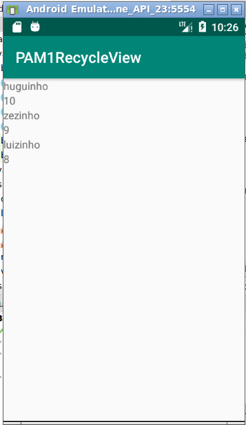
Recycleview é uma evolução da listvew, pode ser que eu chame nosso recycleview de listvew, mas é recycleview o nome correto
6.2 Atividade prática
Vamos fazer essa list view que vc tá vendo na imagem
O objetivo é listar alunos e suas idades Então a primeira coisa que vc vai precisar fazer é criar o projeot e uma classe aluno pra instancia-los e mostrá-los na recycleview
O projeto inteiro está no github na url abaixo
https://github.com/wagnermarques/somewritings/tree/rascunho/android/projetos/PAM1RecycleView
Vc pode e deve acessar as urls que vou apresentando pra vcs durante a execução da sua atividade.
6.3 Criando o projeto, a activity e classe aluno
Eu criei o projeto conforme a imagem abaixo 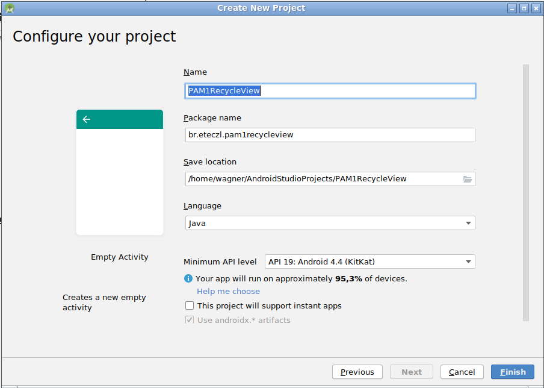
Criei a classe aluno conforme a imagem abaixo 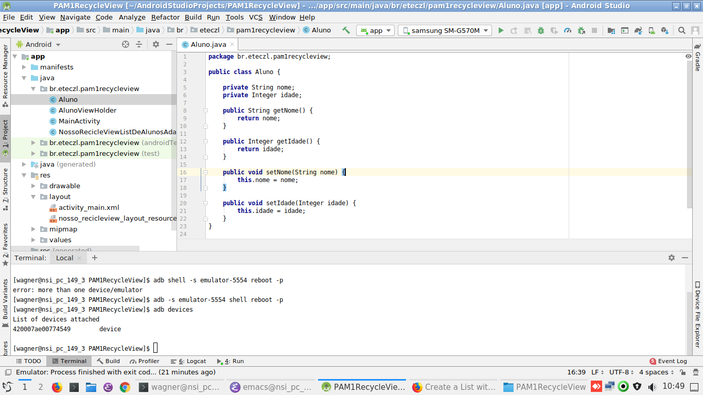
Aí vc vai precisar da activity, caso vc não tenha criado ela na criação dprojeto pode cria-la agora.
Link da minha activity: https://github.com/wagnermarques/somewritings/blob/rascunho/android/projetos/PAM1RecycleView/app/src/main/java/br/eteczl/pam1recycleview/MainActivity.java
Não é pra codificar a activity inteira, segue os passos que vou te dizer agora…
Digita essa parte primeiro. Esses são os dados que serão mostrados no recycleview.
List<Aluno> listAlunos = new ArrayList<>();
Aluno huguinho = new Aluno();
huguinho.setNome("huguinho");
huguinho.setIdade(10);
Aluno zezinho = new Aluno();
zezinho.setNome("zezinho");
zezinho.setIdade(9);
Aluno luizinho = new Aluno();
luizinho.setNome("luizinho");
luizinho.setIdade(8);
listAlunos.add(huguinho);
listAlunos.add(zezinho);
listAlunos.add(luizinho);
6.4 primeiros passos com recycleview
A sua activity tem, por enquanto, só os dados que estão mostrados
Dá uma olhada na linha da abaixo
RecyclerView recyclerView = (RecyclerView) findViewById(R.id.nossoRecycleView);
Se vc digitar esse código agora vai dar erro. Mas, perceba que ele instancia o RecycleView que é o primeiro passo pra vc usa-la. O RecycleView é uma view e precisa de um layout
R.id.nossoRecycleView
Então pra gente poder obter o nosso recycleview com R.id.nossoRecycleView temos que inserir ele na nossa activity
pra isso faça o seguinte… Arraste um recycleview pra sua activity conforme a imagem abaixo Observe que eu o id selecionado
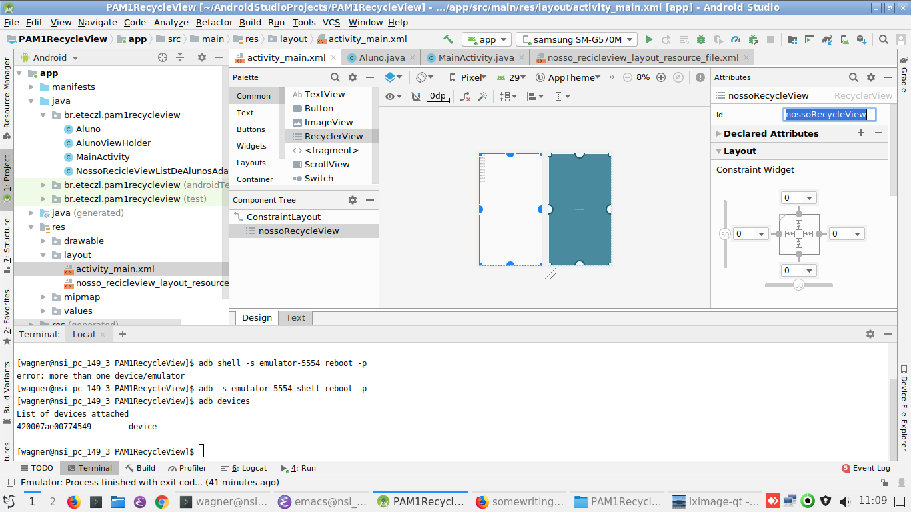
Agora sim, vc pode digitar o a linha
RecyclerView recyclerView = (RecyclerView) findViewById(R.id.nossoRecycleView);
Mesmo assim ainda vai dar um erro porque, apesar de vc ter a recycleview na sua activity vc ainda não consegue importar a classe
Isso é porque vc precisa da biblioteca do recyclevew no seu rpojeto
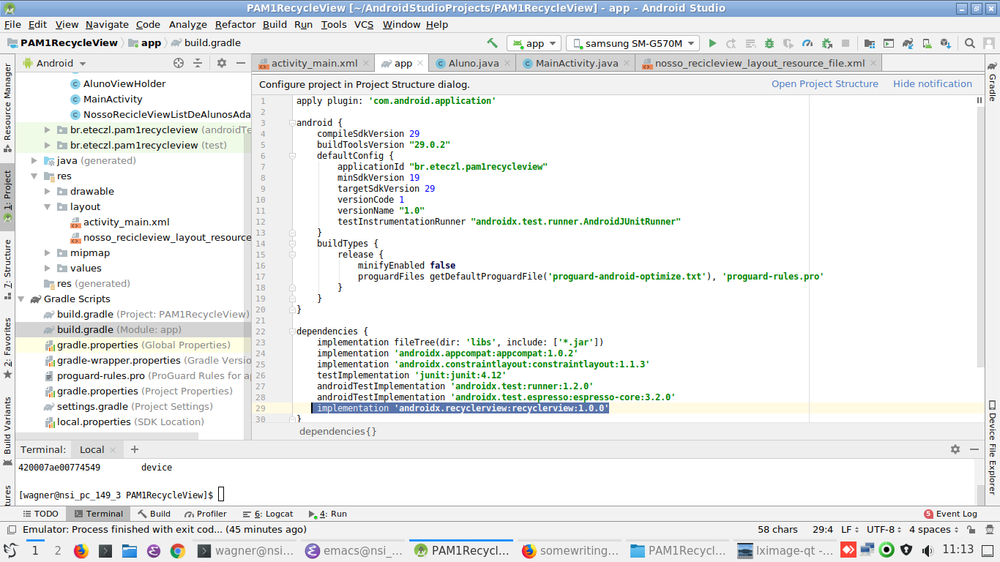
Saiba desde já que seu build.gradle do seu módulo app tem que ficar igual a esse então já pode deixar tudo igual desde já…
nesse caso control c control v tá liberado…
código completo do build.gradle do app: https://github.com/wagnermarques/somewritings/blob/rascunho/android/projetos/PAM1RecycleView/app/build.gradle
Sincronize o seu projeto novamente
Só continue se essa sua linha não der mais erro
6.5 parando pra pensar um pouco
Considerando que seu código não tá dando erro Só falta inserir esse trecho de código abaixo pra vc terminar a atividade Entretanto, tem muita coisa aqui pra vc entender Então antes de colocar no seu projeto vamos entender primeiro
(1) recyclerView.setAdapter(new NossoRecicleViewListDeAlunosAdapter(listAlunos, this));
(2) RecyclerView.LayoutManager layoutManager =
new LinearLayoutManager(this, LinearLayoutManager.VERTICAL, false);
(3) recyclerView.setLayoutManager(layoutManager);
Em poucas palavras fica claro que em (1) nosso recycle view precisa de um adapter que é uma classe que vamos ter criar daquia pouco Em (3) que nosso recycle view precisa também de um layoutManger que é criado em (2). Tatno a nossa classe adapter quanto o nosso layoutManger deverão ser criadao e é isso que vamos fazer a partir de agora.
recyclerView.setAdapter(new NossoRecicleViewListDeAlunosAdapter(listAlunos, this));
O que vc tem que entender é que tem um método do seu recycleview que é o setAdapter. Esse método recebe uma instanciad e uma classe cujo construtor, por sua vez, recebe a lista de alunos e o contexto. Se vc não entendeu essa fraze acima para tudo e conversa primeiro com o pessoal e se não tiver jeito nem continua sem falar com o professor…
Bom em primeiro lugar tem um classe que chama NossoRecicleViewListDeAlunosAdapter cujo construtor recebe um list e o contexto do app android.
Pelo nome da classe já dá pra perceber que é uma classe nossa, que temos que criar…
6.5.1 Criando o NossoRecicleViewListDeAlunosAdapter.java
Eu acredito que até aqui não tá complicado porque só vimos o código da classe aluno e da activity. Um pouco da complexidade do nosso recyclevew vem agora, com o nosso adapter.
Segue a imagem da nossa clases e o link
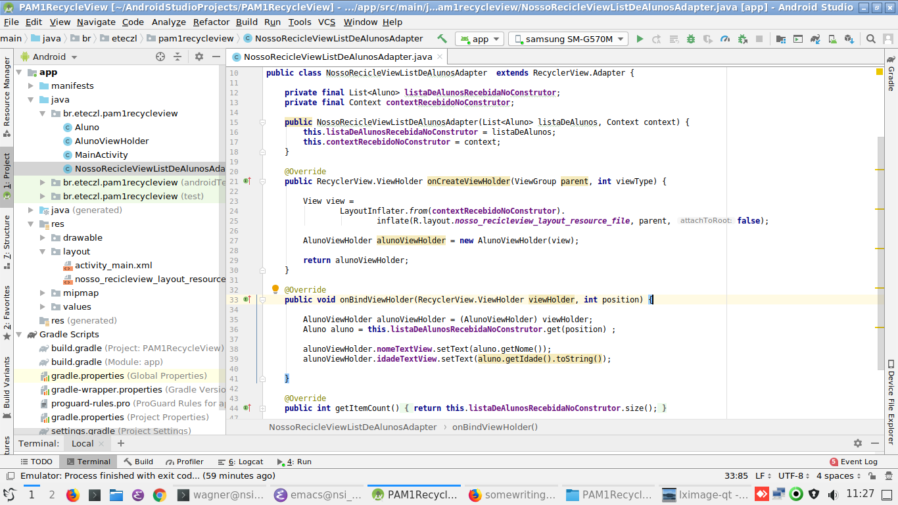
Nossa tarefa agora é compreender essa classe…
De cara da pra perceber que ela extende RecyclerView.Adapter
extends RecyclerView.Adapter {
É isso que faz ela ser um Adapter pro RecycleVeiw que estamos criando. É é aí que é feita a exigência de se receber no construtor um list e o contexto do app do android.
Por isso é que nosso construtor ficou desse jeito abiaox.
Com relação ao construtor abaixo
public NossoRecicleViewListDeAlunosAdapter(List<Aluno> listaDeAlunos, Context context) {
this.listaDeAlunosRecebidaNoConstrutor = listaDeAlunos;
this.contextRecebidoNoConstrutor = context;
}
O método getItemCount é pro recyclevew saber a quantidade de elementos. Vc não vai fazer nenhuma chamada pra esse método, mas sem ele o seu recycleview não funciona.
public int getItemCount() {
return this.listaDeAlunosRecebidaNoConstrutor.size();
}
Agora os dois métodos mais complexos…
@Override
public RecyclerView.ViewHolder onCreateViewHolder(ViewGroup parent, int viewType) {
View view =
LayoutInflater.from(contextRecebidoNoConstrutor).
inflate(R.layout.nosso_recicleview_layout_resource_file, parent, false);
AlunoViewHolder alunoViewHolder = new AlunoViewHolder(view);
return alunoViewHolder;
}
@Override
public void onBindViewHolder(RecyclerView.ViewHolder viewHolder, int position) {
AlunoViewHolder alunoViewHolder = (AlunoViewHolder) viewHolder;
Aluno aluno = this.listaDeAlunosRecebidaNoConstrutor.get(position) ;
alunoViewHolder.nomeTextView.setText(aluno.getNome());
alunoViewHolder.idadeTextView.setText(aluno.getIdade().toString());
}
6.5.2 primeiro vamos conversar sobre o método onCreateViewHolder(ViewGroup parent, int viewType) {
Olha pro corpo dele… Percebe que tem um R.layout.nossorecicleviewlayoutresourcefile Era óbvio até que em algum momento fosse precisar de um layout porque vc tá mostrando dois textView um pro nome o outro pra idade, e o xml desses text views tinham que exisitir pra serem mostrados….
Só que no seu projeto não existe ainda, vc vai ter que criar… Então já cria porque na hora que vc for por esse código no seu projeto já vai funcionar erre R.layout. já vai dar um auto-complete de boa…
Pra criar o seu layout dê uma olhada nessa imagem abaixo…
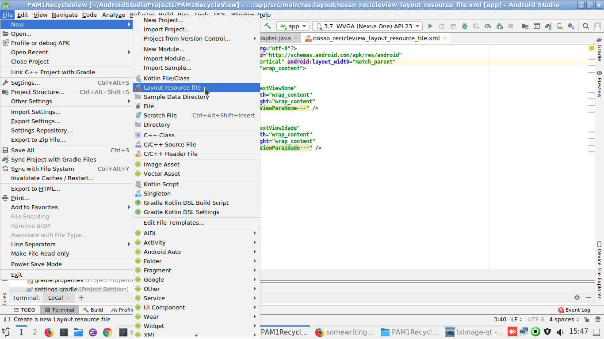
Perceba que eu coloquei dois text views na meu linear layout… 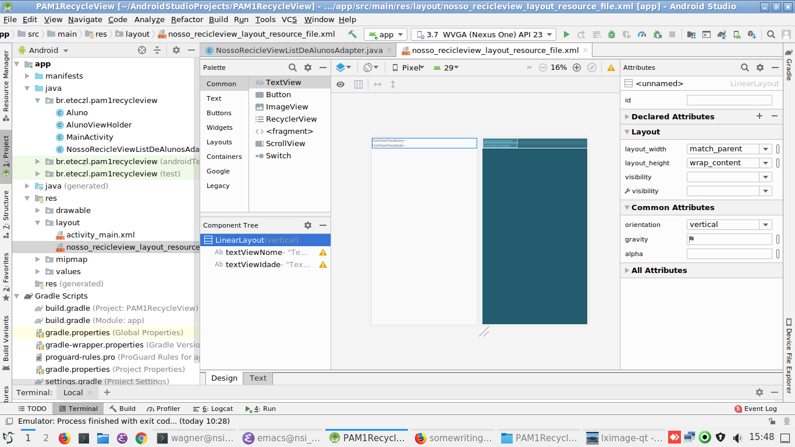
O Resultado final tem que ser esse… Ao contruir o seu arquivo de recurso xml de layout vc confere se ficou igual ao meu… 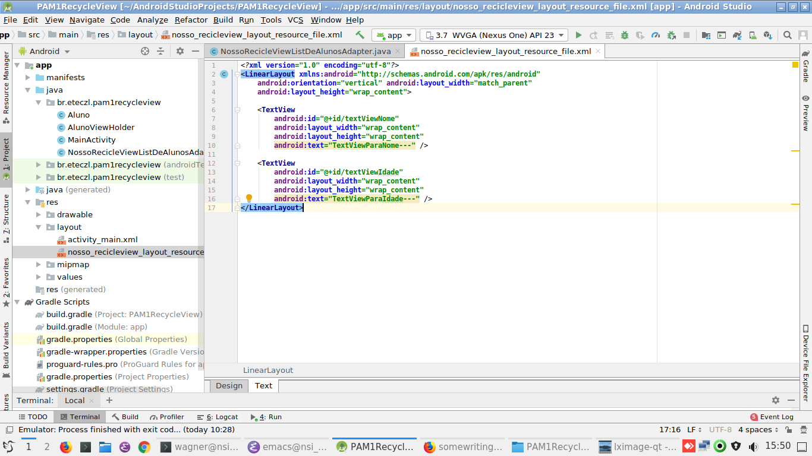
link do arquivo xml completo:https://github.com/wagnermarques/somewritings/blob/rascunho/android/projetos/PAM1RecycleView/app/src/main/res/layout/nosso_recicleview_layout_resource_file.xml
Importante: Não sei se vc percebeu? Na imagem da activity em funcionamento é mostrado três alunos Só que a gente só criou textViews pra mostrar um, ou seja, um textView pro nome e outro pra idade. Se não eprcebeu confere aí.. porque é imiportante… É que a gente só faz uma linha mesmo e essa linha é reutilizada para os demais alunos… Se vc quizesse mostrar a foto de cada aluno vc colocaria um imageview…
Depois que vc criou o seu arquivo de layout vale a pena dar uma olhada no método de novo
@Override
public RecyclerView.ViewHolder onCreateViewHolder(ViewGroup parent, int viewType) {
View view =
LayoutInflater.from(contextRecebidoNoConstrutor).
inflate(R.layout.nosso_recicleview_layout_resource_file, parent, false);
AlunoViewHolder alunoViewHolder = new AlunoViewHolder(view);
return alunoViewHolder;
}
Faz todo sentido
View view = LayoutInflater.from(contextRecebidoNoConstrutor). inflate(R.layout.nossorecicleviewlayoutresourcefile, parent, false);
que vc tá inflando o seu xml pra uma view.
agora vamos entender o trecho
AlunoViewHolder alunoViewHolder = new AlunoViewHolder(view);
vc tá passando essa view (que é seu xml em memória) pra uma classe ViewHolder… ViewHolder em inglês seria tipo uma ClasseQueLidaComView. Essa classe é que vai colocar o o nome de cada a luno na view de verdade.
Obviamente se vc tá dando um new nela "new AlunoViewHolder(view);" vc tem que criá-la pra poder utilizála..
- Criando AlunoViewHolder
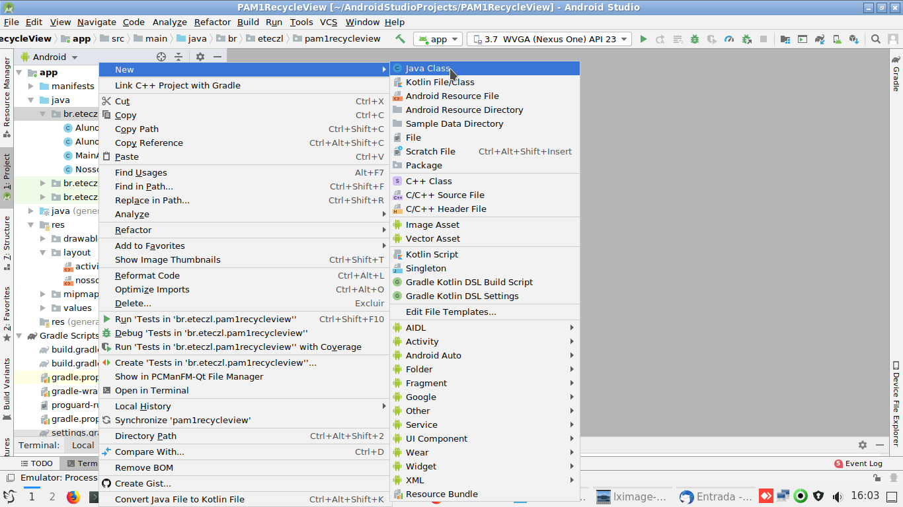
No final sua classe tem que ficar conforme a imagem abaixo 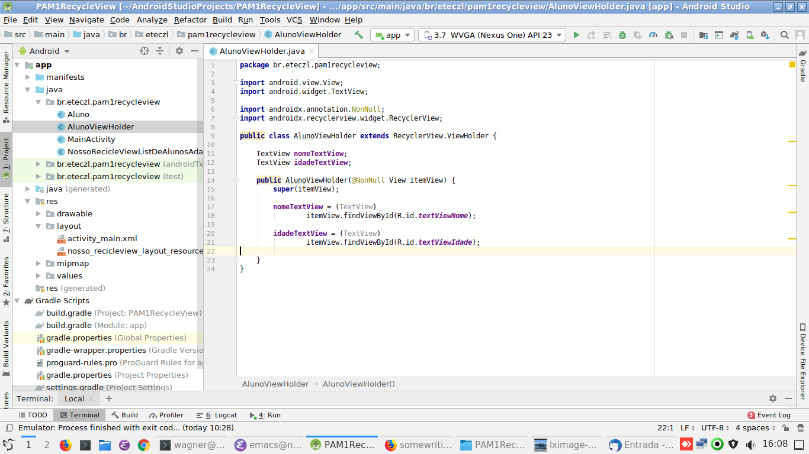
Link pra classe completa:https://github.com/wagnermarques/somewritings/blob/rascunho/android/projetos/PAM1RecycleView/app/src/main/java/br/eteczl/pam1recycleview/AlunoViewHolder.java
Por enquanto o que é importante vc saber é que é essa classe que informa o textView específico pro nome e pra idade.
nomeTextView = (TextView) itemView.findViewById(R.id.textViewNome); idadeTextView = (TextView) itemView.findViewById(R.id.textViewIdade);
6.5.3 vamos conversar agora sobre o metodo onBindViewHolder(RecyclerView.ViewHolder viewHolder, int position) {
Não perde o contexto… Lembra que a gente tava estudando sobre esse trecho de código? Que a gente tava conversando sobre o método onCreateViewHolder(ViewGroup parent, int viewType) ? Agora vamos conversar sobre o outro método, o onBindViewHolder.
@Override
public RecyclerView.ViewHolder onCreateViewHolder(ViewGroup parent, int viewType) {
View view =
LayoutInflater.from(contextRecebidoNoConstrutor).
inflate(R.layout.nosso_recicleview_layout_resource_file, parent, false);
AlunoViewHolder alunoViewHolder = new AlunoViewHolder(view);
return alunoViewHolder;
}
@Override
public void onBindViewHolder(RecyclerView.ViewHolder viewHolder, int position) {
AlunoViewHolder alunoViewHolder = (AlunoViewHolder) viewHolder;
Aluno aluno = this.listaDeAlunosRecebidaNoConstrutor.get(position) ;
alunoViewHolder.nomeTextView.setText(aluno.getNome());
alunoViewHolder.idadeTextView.setText(aluno.getIdade().toString());
}
Esse método seja talvez o mais simples de entender…
@Override
public void onBindViewHolder(RecyclerView.ViewHolder viewHolder, int position) {
AlunoViewHolder alunoViewHolder = (AlunoViewHolder) viewHolder;
Aluno aluno = this.listaDeAlunosRecebidaNoConstrutor.get(position) ;
alunoViewHolder.nomeTextView.setText(aluno.getNome());
alunoViewHolder.idadeTextView.setText(aluno.getIdade().toString());
}
A gente instancia o vewHolder, que é quem informar o textView específioco pro nome e pra idade. A gente pega os nossos textViews específivocs e fornecemos os valores explícitos pra eles… Com um detalhe…. A gente nao faz um for no nosso list… Esse método é chamado pelo biblioteca mesmo do recyclevew pra cada um dos itens do nosso list de modo que o listaDeAlunosRecebidaNoConstrutor.get(position) pega o aluno na "position" correta do nosso list.
7 Exercicios e Atividades de Reflexão/Fixação
Exercício de fixação é a construçao do seu projeto, copiando o meu Depois fica como desafio vc incluir a imagem dos alunos
8 Avaliação
Entrega do link no github do seu projeto no email wagner.marques3@etec.sp.gov.br Mostrar para o professor funcionando no seu celular ou no emulador
9 Referencias
https://developer.android.com/guide/topics/ui/layout/recyclerview https://medium.com/android-dev-br/listas-com-recyclerview-d3f41e0d653c http://www.androidtutorialshub.com/android-recyclerview-tutorial/ https://www.androidpro.com.br/blog/design-layout/recyclerview-cardview/ https://www.vogella.com/tutorials/AndroidRecyclerView/article.html